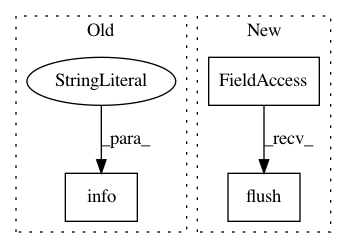

f024f6b705db8c0cb467f9b51d5c166e76c1f184,tensorboard/plugins/debugger/interactive_debugger_plugin.py,InteractiveDebuggerPlugin,listen,#InteractiveDebuggerPlugin#Any#,72
Before Change
"gRPC port %d" % self._grpc_port)
self._grpc_port = grpc_port
tf.logging.info("Creating InteractiveDebuggerPlugin at port %d",
self._grpc_port)
self._debugger_data_server = (
interactive_debugger_server_lib.InteractiveDebuggerDataServer(
self._grpc_port))
After Change
sys.stderr.write("Creating InteractiveDebuggerPlugin at port %d\n" %
self._grpc_port)
sys.stderr.flush()
self._debugger_data_server = (
interactive_debugger_server_lib.InteractiveDebuggerDataServer(
self._grpc_port))
In pattern: SUPERPATTERN
Frequency: 3
Non-data size: 3
Instances
Project Name: tensorflow/tensorboard
Commit Name: f024f6b705db8c0cb467f9b51d5c166e76c1f184
Time: 2017-12-06
Author: nfelt@users.noreply.github.com
File Name: tensorboard/plugins/debugger/interactive_debugger_plugin.py
Class Name: InteractiveDebuggerPlugin
Method Name: listen
Project Name: tensorflow/tensorboard
Commit Name: a736f1b5cd976d81d9541aabcb66db16e13fd26b
Time: 2017-09-01
Author: jart@google.com
File Name: tensorboard/main.py
Class Name:
Method Name: run_simple_server
Project Name: tensorflow/models
Commit Name: 2d34259281a6251cbdc67103ce8a1310010b8ceb
Time: 2020-10-05
Author: dhr@google.com
File Name: orbit/controller.py
Class Name: Controller
Method Name: _train_n_steps